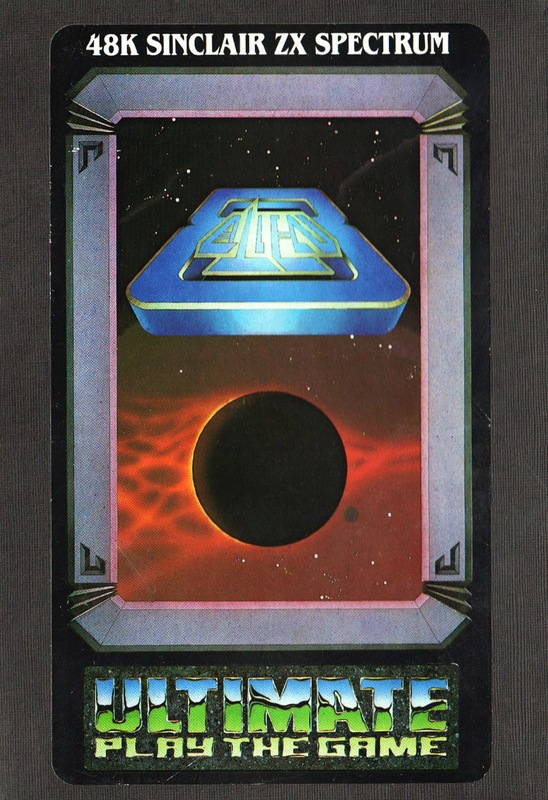
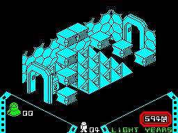
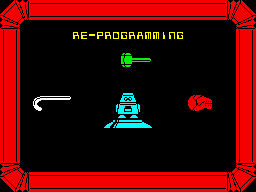
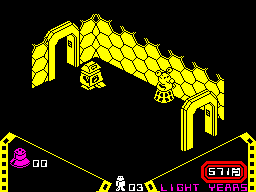

Alien 8


{kind=link}

| Publisher: | Ultimate Play the Game |
| Price: | £9.95 |
| Year: | 1985 |
| Source: | CRASH, Issue 15 |

Alien 8 was perhaps the most long-awaited game from Ultimate from the time of its first appearance as an advert. Due to the time scale it just missed review in last month’s issue, so by now probably most fans will know all about the game and this review will be redundant. But perhaps not. Has Alien 8 caused another controversy? It looks just like Knight Lore a lot of people exclaimed, feeling obscurely ripped off. Now read, after the event (!), what the CRASH team thought about Alien 8.

differently.
But first, a brief word about the game. Indubitably, the graphics style is identical to that developed for Knight Lore, with the solid looking 3D graphics. Again, objects can be manipulated in a variety of ways to make life easier for Alien 8, a cute little robot who thinks in 8 directions but moves in four. As Alien 8 (making his first appearance in this month’s Adventures of Jetman), you are aboard a starship which is slowing for its long-waited rendez-vous. The ship is full of rooms some containing cryogenically frozen beings. The object is to restore life to this chilly people before the time limit for arrival runs out. Life of course would be mechanically simple, were it not for the varied aliens penetrating the ship’s defences. On top of that you must locate replacement packs for the robot, and work out what helps you to do what and when.
The rooms are necessarily more space ship-like than those in the dungeons of Knight Lore, but again blocks and pedestals are piled up in puzzling configurations, often hiding unpleasant spikes and pyramids. Some blocks move under their own power, others may be moved, and many dissolve on their being touched. As the light years tick away to zero, the pace becomes hectic...
CRITICISM

another game.
‘It’s here and they’ve done it again. Alien 8 is, in its basic design, rather similar to Knight Lore. On more observation I felt it would be Knight Lore in space, but after playing for a bit this was proved very wrong. It was much more than this. In fact A8 is A1. The game is really challenging and has plenty of features and tests. Lateral thinking as well as arcade reflexes are required. The hero, Alien 8 the robot, has a personality due to his style of movement and actions. This space craft seems to be mouse ridden; perhaps Sabre Wulf could have some casual employment here; it contains clockwork mice and things I’ve christened ‘mouleks’ — half mouse, half Dalek. A useful piece of equipment to find is a compass stand which, when stood upon, controls the multi-directional robots — great for mine clearing. The support valves come in useful as a jumping platform now and again (it didn’t seem to impair their ability to function when inserted in the socket). Overall Alien 8 is excellent and a worthy smash. I’m pleased to see the greater combination of thought and reflexes that this adds to the computer game. Congratulations Ultimate, again. For those who may moan that this is too similar to Knight Lore, well let them moan as they probably couldn’t do better. There will many more who do appreciate it. I do for one!’

'Douse' or something, in a room of
unfriendly blocks.
‘Alien 8 looks like and plays like Knight Lore but the game is a bit of an advancement over the former game. The graphics are excellent and the sound is good too. Despite the similarity of idea, I think of the two I prefer Alien 8 as it seems a bit more playable. The game features quite a few nice touches such as the robot thing you can control when your character is standing on the cursor pods. An excellent game.’
‘Many people will regard this game as having only a slight difference to Knight Lore. I cannot agree. For a start the graphics are more imaginative and pleasing. There seems to be more structure to the game, it is not so easy to just wander about, and you actually have to do things, collecting objects in order to gain access to other parts of the space ship as well as avoiding meanies and traps that are placed around the ship. The graphics are well up to Ultimate’s usual standard, if not better; they are clear and well designed with continuous variation throughout. I am pleased to see that Ultimate have included a time feature urging you on to race through the game. Alien 8 is compelling and and exciting to play but does pose many strategic and thinking problems as well as arcade action. No doubt this will be another winner for Ultimate. I wonder what their next game will be...?’
COMMENTS
| Control keys: | Alternate bottom row keys left/right, A,S,D,F to move forward, Q, W,E,R to jump, top row to pick up/drop |
| Joystick: | Kempston, Sinclair 2, Cursor type |
| Keyboard play: | The various key options are easy to use and response is very finely tuned |
| Use of colour: | The single colour per room allows for good line graphics |
| Graphics: | Excellent, varied, characterful and very smooth |
| Sound: | Good |
| Skill levels: | 1 |
| Screens: | 129 |
| General rating: | Agreement that this is a slightly better game in most respects than Knight Lore, and therefore generally excellent. |
| Use of computer: | 93% |
| Graphics: | 98% |
| Playability: | 96% |
| Getting started: | 91% |
| Addictive qualities: | 97% |
| Value for money: | 93% |
| Overall: | 95% |